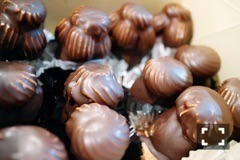

| 2016/11 19 Sat | 斎藤ちはる シャンデリアという意味。 |
ちはるーむへようこそ！
16th衣装の全身バージョンだよ〜
ミラーレスで撮ってみました！
実はこの写真を撮った数日後に、
ミラーレス本体に付けていた
カメラカバーが無くなってしまって(;_;)
ネジが緩んでたのかな。
だからまだカメラカバーがあるのが懐かしい...
悲しい...寂しい...
むむむ。
-------------------------♡
◎Chihafood◎
今日は斎藤家どハマり！の、
スイーツを紹介します。
オザワ洋菓子店さんの、
「イチゴシャンデ」

ん？なんだこれは！って
一見不思議に思うよね。
でも中はこうなっています。
手作りクッキーの上に
イチゴが乗っていて、
その上に帽子のようなホイップクリーム。
そしてチョココーティングがされています！
イチゴの甘酸っぱさと、
昔ながらのチョコレートの美味しさ、
ホイップクリームのフワフワ感、
チョコレートのパリパリ感、
クッキーのサクサク感。
シンプルながらも色々な美味しい要素が
詰まっていてクセになります( ¨̮ )！
ちなみに芸能人への差し入れでも
イチゴシャンデは人気らしい。
確かにこれいただいたら嬉しいもんな〜♡
サイズも小、大、特大サイズと3種類あるので
その時の気分で食べてみてくださいな！
-------------------------♡
♬ ChihaMusic
「虹」Aqua Timesさん
小中学生の時から大好きな曲。
よくプロフィール帳(懐かしい笑)に
一番好きな曲の欄に書いてたなぁ
美しくて綺麗な世界観。
"君には君の物語があり
僕の知らない涙がある
もしかしたら僕が笑う頃に
君は泣いてたのかもしれない
似たような喜びはあるけれど
同じ悲しみはきっとない"
という歌詞にずっと心打たれていた。
同じ嬉しさはあっても
同じ悲しさはなくて
それぞれの心の中で色々な葛藤がある。
だけど虹がかかったら
空の下みんな繋がっているんだ。
素敵な歌詞...
昨日の勇者ヨシヒコを見ていた方、
誰かを思い出しませんでしたか？
私は思い出しました。
去年の夏を。
『ベルばら姉妹』
おやすみ〜
斎藤ちはる